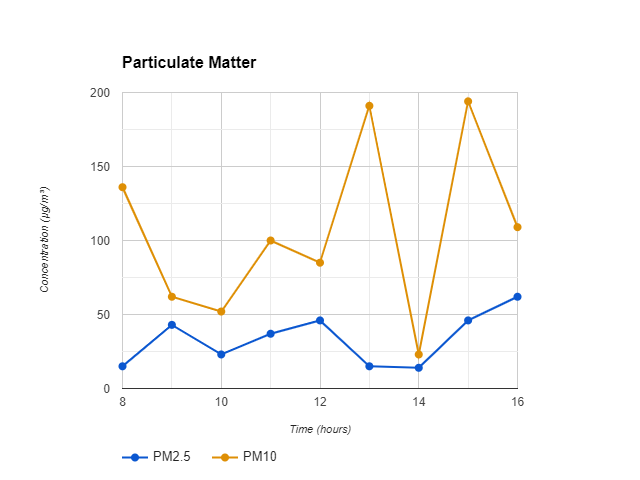
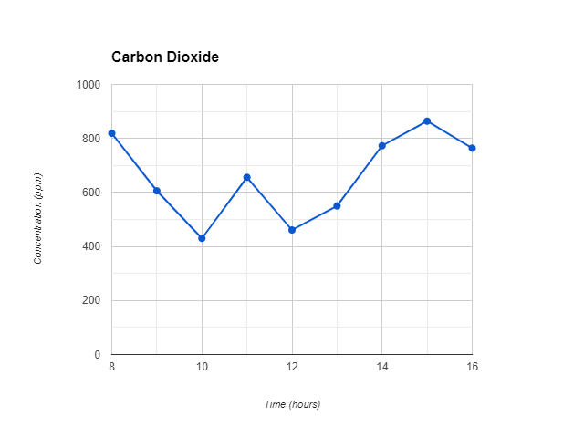
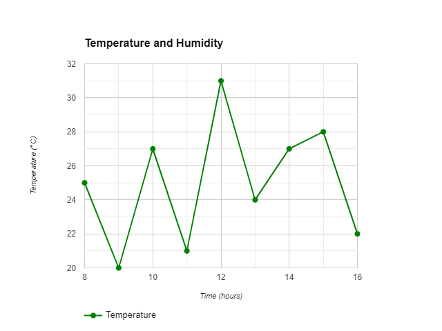
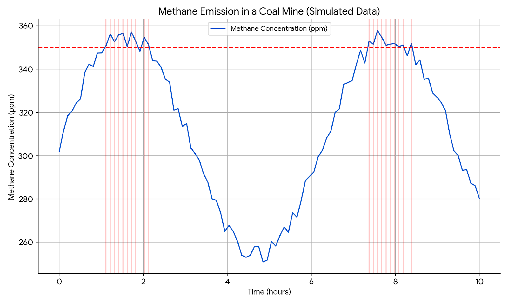
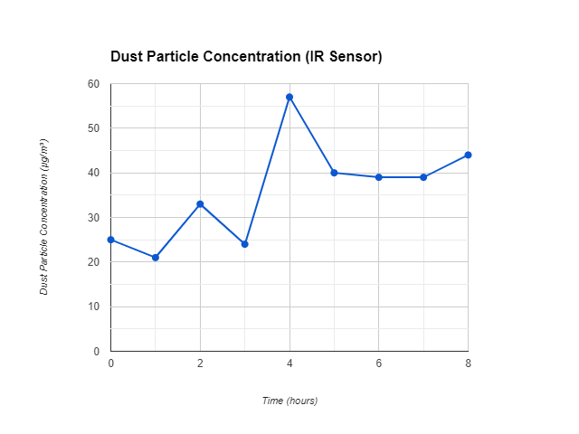
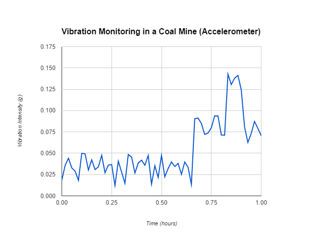

Graph 1: Particulate Matter (PM2.5 and PM10): Laser particle counters

Graph 2: Carbon Dioxide (CO2): Infrared gas sensors

Graph 3: Temperature and Humidity: Capacitive humidity sensors and thermistors

Graph 4: Methane Emission: MQ-4 sensor

Graph 5: Particulate Matter (PM2.5, PM10), CO2, and other gases: Optical Particle Counters

Graph 6: Vibration Sensor: MPU6050 Sensor